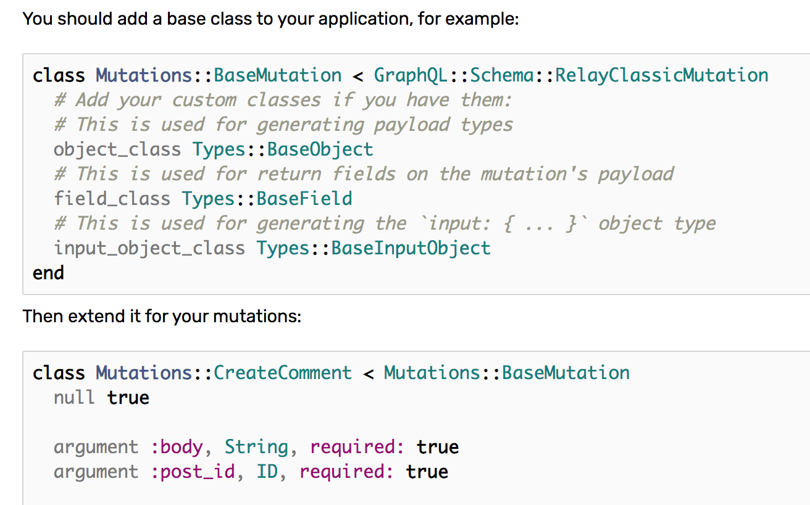
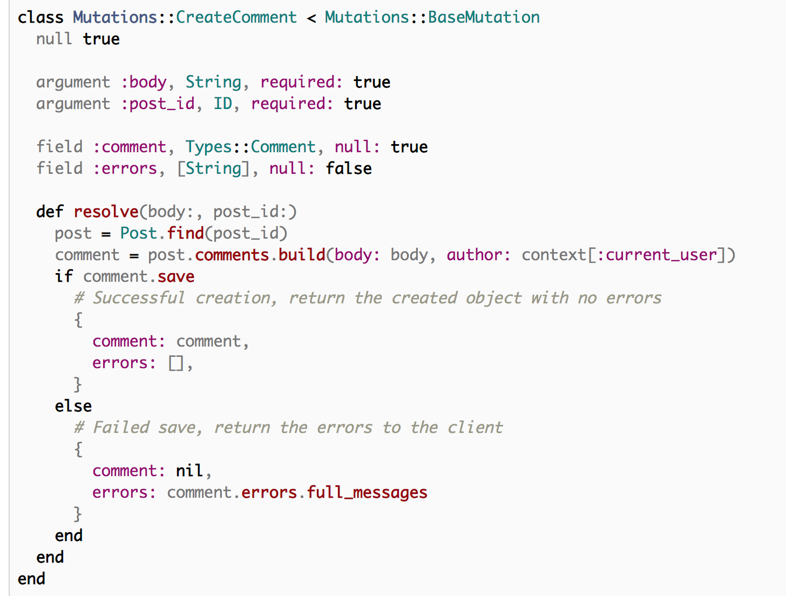

Chap5 Mutation(CREATE)
Todo in this chapter
- Implement feature to create post
Step1. Run generator command
 https://graphql-ruby.org/schema/generators.html#scaffolding-mutations
https://graphql-ruby.org/schema/generators.html#scaffolding-mutations
terminal
rails g graphql:mutation create_post Running via Spring preloader in process 63092 exist app/graphql/mutations identical app/graphql/mutations/.keep identical app/graphql/types/mutation_type.rb add_root_type mutation create app/graphql/mutations/create_post.rb gsub app/graphql/types/mutation_type.rb
- This command creates
app/graphql/mutations/create_post.rb - And modify
app/graphql/types/mutation_type.rb
app/graphql/mutations/create_post.rb
module Mutations class CreatePost < GraphQL::Schema::RelayClassicMutation # TODO: define return fields # field :post, Types::PostType, null: false # TODO: define arguments # argument :name, String, required: true # TODO: define resolve method # def resolve(name:) # { post: ... } # end end end
app/graphql/types/mutation_type.rb
module Types class MutationType < Types::BaseObject field :createPost, mutation: Mutations::CreatePost # TODO: remove me field :test_field, String, null: false, description: "An example field added by the generator" def test_field "Hello World" end end end
Step2. Create base_mutation.rb

https://graphql-ruby.org/mutations/mutation_classes.html#example-mutation-class
- Create
graphql/mutations/base_mutation.rb
# We use GraphQL::Schema::Mutation not GraphQL::Schema::RelayClassicMutation# Because I use apollo-client class Mutations::BaseMutation < GraphQL::Schema::Mutation end
Step3. Modify /mutations/create_post.rb
 https://graphql-ruby.org/mutations/mutation_classes.html#example-mutation-class
- Just imitate official docs:
mutations/create_post.rb
module Mutations # inherit Mutations::BaseMutation class CreatePost < Mutations::BaseMutation # Define what type of value to be returned field :post, Types::PostType, null: false # Define what argument this mutation accepts argument :title, String, required: true argument :body, String, required: true def resolve(title:, body:) # we will use current_user in future user = User.first post = user.posts.new(title: title, body: body) # Here returns post field, which is defined above. if post.save { post: post, errors: [], } else # Failed save, return the errors to the client { post: nil, errors: post.errors.full_messages } end end end end
Step4. Test in grahpiql
(1). createPost mutation

(2). query posts again
 - You see new post is included in response.
- You see new post is included in response.
Finish!